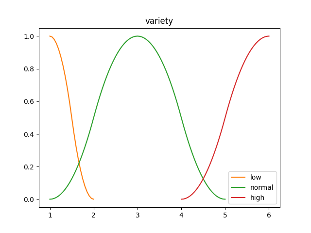
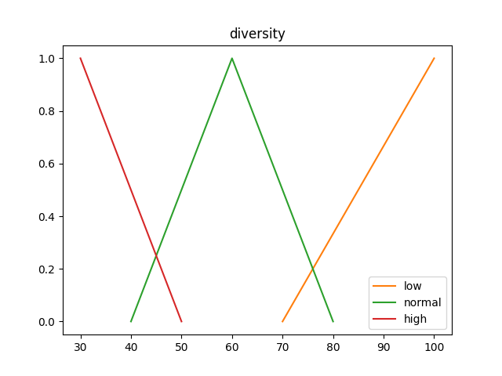
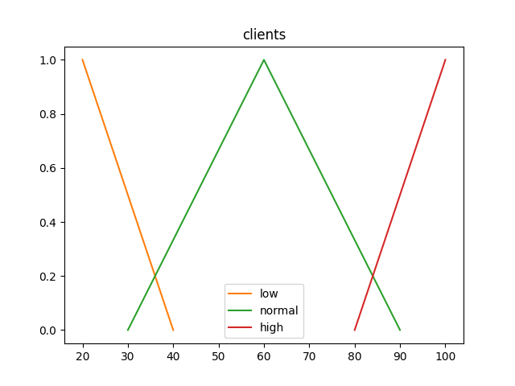
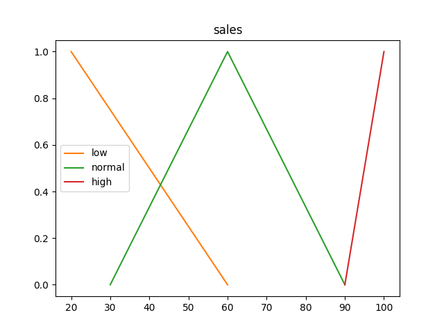

Inferfuzzy🔗


Inferfuzzy es una biblioteca de Python para implementar Sistemas de Inferencia Difusa.
Empezando🔗
Instalación🔗
pip install inferfuzzy
Uso🔗
Creación de variables lingüísticas y sus conjuntos difusos asociados.
variable_1 = Var("variable_name_1")
variable_1 += "set_name_1", ZMembership(1, 2)
variable_1 += "set_name_2", GaussianMembership(3, 2)
variable_1 += "set_name_3", SMembership(4, 6)
variable_2 = Var("variable_name_2")
variable_2 += "set_name_4", GammaMembership(70, 100)
variable_2 += "set_name_5", LambdaMembership(40, 60, 80)
variable_2 += "set_name_6", LMembership(30, 50)
Declarar las reglas semánticas y el método de inferencia a utilizar.
mamdani = MamdaniSystem(defuzz_func=centroid_defuzzification)
mamdani += variable_1.into("set_name_1") | variable_1.into("set_name_3"), variable_2.into("set_name_5")
mamdani += variable_1.into("set_name_2"), variable_2.into("set_name_4")
Usando el método de inferencia difusa para valores ingresados por el usuario.
variable_1_val = float(input())
mamdani_result: float = mamdani.infer(variable_name_1=variable_1_val)["variable_name_2"]
Características del Sistema de Inferencia🔗
La biblioteca contiene implementados los métodos de inferencia Mamdani y Larsen. Pero es posible implementar partiendo de una base común otros métodos de inferencia.
Los métodos de inferencia reciben una función de defuzzificación. La biblioteca contiene implementadas Centroide, Bisectriz, Máximo Central, Máximo más pequeño y Máximo más grande.
Durante el proceso de definición de los conjuntos difusos esto requieren una función de membresía que puede ser implementada o utilizar una de las disponibles en la biblioteca.
Funciones de membresía implementadas en Inferfuzzy:
- Función Gamma
- Función Lambda o Triangular
- Función Pi o Trapezoidal
- Función S
- Función Z
- Función Gaussiana
La T-conorm y T-norm utilizadas en las reglas de inferencia, así como el método de agregación de los conjuntos son posibles de sobrescribir, por defecto, son mínimo, máximo y máximo respectivamente.
Es posible definir más de una variable de salida para el sistema de inferencia difusa implementado en la biblioteca.
Estructura de la Implementación🔗
La implementación se sostiene sobre 7 clases fundamentales:
MembershipBaseSetBaseVarBaseRulePredicateVarSetInferenceSystem
Membership🔗
Es la clase encargada de representar una función de membresía junto a los puntos (llamados items internamente)
class Membership:
def __init__(self, function: Callable[[Any], Any], items: list):
self.function = function
self.items = items
def __call__(self, value: Any):
return self.function(value)
BaseSet🔗
Es la clase encargada de representar un conjunto difuso. Recibe como parámetros un objeto de tipo Membership representando la función de membresía del conjunto y un método de agregación.
class BaseSet:
def __init__(
self,
name: str,
membership: Membership,
aggregation: Callable[[Any, Any], Any],
):
self.name = name
self.membership = membership
self.aggregation = aggregation
def __add__(self, arg: "BaseSet"):
memb = Membership(
lambda x: self.aggregation(
self.membership(x),
arg.membership(x),
),
self.membership.items + arg.membership.items,
)
return BaseSet(
f"({self.name})_union_({arg.name})",
memb,
aggregation=self.aggregation,
)
BaseVar🔗
Es la clase encargada de representar una variable lingüística. Recibe como parámetros una función de unión, una función de intercepción y una lista de objetos de tipo BaseSet representando los conjuntos difusos de la variable.
class BaseVar:
def __init__(
self,
name: str,
union: Callable[[Any, Any], Any],
inter: Callable[[Any, Any], Any],
sets: Optional[List[BaseSet]] = None,
):
self.name = name
self.sets = {set.name: set for set in sets} if sets else {}
self.union = union
self.inter = inter
def into(self, set: Union[BaseSet, str]) -> VarSet:
set_name = set.name if isinstance(set, BaseSet) else set
if set_name not in self.sets:
raise KeyError(f"Set {set_name} not found into var {self.name}")
temp_set = self.sets[set_name]
return VarSet(self, temp_set, self.union, self.inter)
BaseRule🔗
Es la clase encargada de representar una regla de inferencia. Recibe como parámetro un objeto de tipo Predicate representando el antecedente de la regla.
class BaseRule:
def __init__(self, antecedent: Predicate):
self.antecedent = antecedent
def __call__(self, values: dict):
raise NotImplementedError()
BaseRule no contiene consecuencias porque las consecuencias de todos los tipos de reglas no son de la misma estructura. La clase Rule hereda de BaseRule y representa las reglas en los que el sistema produce un conjunto o más como resultado.
class Rule(BaseRule):
def __init__(self, antecedent: Predicate, consequences: List[VarSet]):
super(Rule, self).__init__(antecedent)
self.consequences = consequences
def aggregate(self, set: BaseSet, value: Any) -> BaseSet:
raise NotImplementedError()
def __call__(self, values: dict):
value = self.antecedent(values)
return {
consequence.var.name: self.aggregate(
consequence.set,
value,
)
for consequence in self.consequences
}
Predicate🔗
Es la clase encargada de representar a los antecedentes. De ella heredan cuatro clases: AndPredicate, OrPredicate, NotPredicate y VarSet. Las primeras tres para representar las relaciones lógicas de unión, intercepción y negación; y la última representa la inclusión de una variable en un determinado conjunto, siendo esta la clase básica para representar a los antecedentes.
class Predicate:
def __init__(
self,
union: Callable[[Any, Any], Any],
inter: Callable[[Any, Any], Any],
) -> None:
self.union = union
self.inter = inter
def __call__(self, values: dict):
raise NotImplementedError()
def __and__(self, other: "Predicate"):
return AndPredicate(self, other, self.union, self.inter)
def __or__(self, other: "Predicate"):
return OrPredicate(self, other, self.union, self.inter)
def __invert__(self):
return NotPredicate(self, self.union, self.inter)
VarSet🔗
class VarSet(Predicate):
def __init__(
self,
var: "BaseVar",
set: BaseSet,
union: Callable[[Any, Any], Any],
inter: Callable[[Any, Any], Any],
):
super(VarSet, self).__init__(union, inter)
self.var = var
self.set = set
def __call__(self, values: dict):
return self.set.membership(values[self.var.name])
InferenceSystem🔗
Es la clase encargada de representar el sistema de inferencia. Recibe como parámetros las reglas y una función de defuzzificación y con el método infer permite realizar la inferencia según los valores proveídos.
class InferenceSystem:
def __init__(
self,
rules: Optional[List[BaseRule]] = None,
defuzz_func: Optional[Callable[[BaseSet], Any]] = None,
):
self.rules = rules if rules else []
self.defuzz_func = defuzz_func
def infer(
self,
values: dict,
defuzz_func: Optional[Callable[[BaseSet], Any]] = None,
) -> Dict[str, Any]:
if not self.rules:
raise Exception("Empty rules")
if self.defuzz_func is None and defuzz_func is None:
raise Exception("Defuzzification not found")
func = self.defuzz_func if defuzz_func is None else defuzz_func
set: Dict[str, BaseSet] = self.rules[0](values)
for rule in self.rules[1:]:
temp: Dict[str, BaseSet] = rule(values)
for key in temp:
set[key] += temp[key]
result: Dict[str, Any] = {}
for key in set:
result[key] = func(set[key])
return result
Ejemplo de como utilizar Inferfuzzy🔗
Como ejemplo se utilizará el siguiente problema.
Se desea inferir el por ciento de la cantidad de un determinado producto que se ha vendido en un día en un restaurante, cafetería, etc.
Por ejemplo, el producto Pollo, se desea conocer bajo determinadas condiciones que por ciento del Pollo sacado del almacén dispuesto para venderse ese día se termina vendiendo.
Para la implementación se seleccionaron 4 variables lingüísticas. Las primeras 3 de entrada y la última de salida.
- Cantidad de platos o derivados del producto que se vende. Por ejemplo, retomando el ejemplo del Pollo, si se vendería Pollo Frito y Pollo Asado, la variable valdría
2. A esta variable le llamaremosvariety.- Baja:
low <= 2. Función de Membresía: Z - Normal:
1 <= normal <= 5. Función de Membresía: Gaussiana - Alta:
high >= 4. Función de Membresía: S
- Baja:
- Por ciento que representa la variable
varietydel total de platos o derivados de productos que se vende. Por ejemplo, si se vende Pollo Frito, Pollo Asado, Pescado y Cerdo la variable valdría50. A esta variable se le llamarádiversity.- Baja:
low >= 70. Función de Membresía: Gamma - Normal:
40 <= normal <= 80. Función de Membresía: Lambda - Alta:
high <= 50. Función de Membresía: L
- Baja:
- Por ciento de la utilización del local, si es
100es que el local siempre está lleno, si es0es que no asiste ningún cliente al establecimiento. A esta variable se le llamaráclients.- Baja:
low <= 40. Función de Membresía: L - Normal:
30 <= normal <= 90. Función de Membresía: Lambda - Alta:
high >= 80. Función de Membresía: Gamma
- Baja:
- Por ciento de la cantidad del producto que se vendió en el día, si es
100fue se vendió todo al final del día, si es50fue que no se vendió la mitad de la cantidad. A esta variable se le llamarásales.- Baja:
low <= 60. Función de Membresía: L - Normal:
30 <= normal <= 90. Función de Membresía: Lambda - Alta:
high >= 90. Función de Membresía: Gamma
- Baja:
Declaración de las variables lingüísticas y sus conjuntos difusos en Inferfuzzy🔗
variety_var = Var("variety")
variety_var += "low", ZMembership(1, 2)
variety_var += "normal", GaussianMembership(3, 2)
variety_var += "high", SMembership(4, 6)
diversity_percent_var = Var("diversity")
diversity_percent_var += "low", GammaMembership(70, 100)
diversity_percent_var += "normal", LambdaMembership(40, 60, 80)
diversity_percent_var += "high", LMembership(30, 50)
clients_percent_var = Var("clients")
clients_percent_var += "low", LMembership(20, 40)
clients_percent_var += "normal", LambdaMembership(30, 60, 90)
clients_percent_var += "high", GammaMembership(80, 100)
sales_percent_var = Var("sales")
sales_percent_var += "low", LMembership(20, 60)
sales_percent_var += "normal", LambdaMembership(30, 60, 90)
sales_percent_var += "high", GammaMembership(90, 100)
Gráficos de pertenencia de los conjuntos por cada variable🔗




Reglas de Inferencia🔗
| variety | diversity | clients | sales |
|---|---|---|---|
| low | low | low | low |
| low | low | normal | normal |
| low | low | high | high |
| low | normal | low | low |
| low | normal | normal | low |
| low | normal | high | normal |
| low | high | low | low |
| low | high | normal | low |
| low | high | high | normal |
| normal | low | low | low |
| normal | low | normal | normal |
| normal | low | high | high |
| normal | normal | low | low |
| normal | normal | normal | normal |
| normal | normal | high | normal |
| normal | high | low | low |
| normal | high | normal | low |
| normal | high | high | normal |
| high | low | low | low |
| high | low | normal | normal |
| high | low | high | high |
| high | normal | low | low |
| high | normal | normal | low |
| high | normal | high | high |
| high | high | low | low |
| high | high | normal | low |
| high | high | high | normal |
Declaración de las Reglas de Inferencia en Inferfuzzy🔗
mamdani = MamdaniSystem(
defuzz_func=centroid_defuzzification,
)
mamdani += (
variety_var.into("low")
& diversity_percent_var.into("low")
& clients_percent_var.into("low")
), sales_percent_var.into("low")
mamdani += (
variety_var.into("low")
& diversity_percent_var.into("low")
& clients_percent_var.into("normal")
), sales_percent_var.into("normal")
mamdani += (
variety_var.into("low")
& diversity_percent_var.into("low")
& clients_percent_var.into("high")
), sales_percent_var.into("high")
mamdani += (
variety_var.into("low")
& diversity_percent_var.into("normal")
& clients_percent_var.into("low")
), sales_percent_var.into("low")
mamdani += (
variety_var.into("low")
& diversity_percent_var.into("normal")
& clients_percent_var.into("normal")
), sales_percent_var.into("low")
mamdani += (
variety_var.into("low")
& diversity_percent_var.into("normal")
& clients_percent_var.into("high")
), sales_percent_var.into("normal")
mamdani += (
variety_var.into("low")
& diversity_percent_var.into("high")
& clients_percent_var.into("low")
), sales_percent_var.into("low")
mamdani += (
variety_var.into("low")
& diversity_percent_var.into("high")
& clients_percent_var.into("normal")
), sales_percent_var.into("low")
mamdani += (
variety_var.into("low")
& diversity_percent_var.into("high")
& clients_percent_var.into("high")
), sales_percent_var.into("normal")
mamdani += (
variety_var.into("normal")
& diversity_percent_var.into("low")
& clients_percent_var.into("low")
), sales_percent_var.into("low")
mamdani += (
variety_var.into("normal")
& diversity_percent_var.into("low")
& clients_percent_var.into("normal")
), sales_percent_var.into("normal")
mamdani += (
variety_var.into("normal")
& diversity_percent_var.into("low")
& clients_percent_var.into("high")
), sales_percent_var.into("high")
mamdani += (
variety_var.into("normal")
& diversity_percent_var.into("normal")
& clients_percent_var.into("low")
), sales_percent_var.into("low")
mamdani += (
variety_var.into("normal")
& diversity_percent_var.into("normal")
& clients_percent_var.into("normal")
), sales_percent_var.into("normal")
mamdani += (
variety_var.into("normal")
& diversity_percent_var.into("normal")
& clients_percent_var.into("high")
), sales_percent_var.into("normal")
mamdani += (
variety_var.into("normal")
& diversity_percent_var.into("high")
& clients_percent_var.into("low")
), sales_percent_var.into("low")
mamdani += (
variety_var.into("normal")
& diversity_percent_var.into("high")
& clients_percent_var.into("normal")
), sales_percent_var.into("low")
mamdani += (
variety_var.into("normal")
& diversity_percent_var.into("high")
& clients_percent_var.into("high")
), sales_percent_var.into("normal")
mamdani += (
variety_var.into("high")
& diversity_percent_var.into("low")
& clients_percent_var.into("low")
), sales_percent_var.into("low")
mamdani += (
variety_var.into("high")
& diversity_percent_var.into("low")
& clients_percent_var.into("normal")
), sales_percent_var.into("normal")
mamdani += (
variety_var.into("high")
& diversity_percent_var.into("low")
& clients_percent_var.into("high")
), sales_percent_var.into("high")
mamdani += (
variety_var.into("high")
& diversity_percent_var.into("normal")
& clients_percent_var.into("low")
), sales_percent_var.into("low")
mamdani += (
variety_var.into("high")
& diversity_percent_var.into("normal")
& clients_percent_var.into("normal")
), sales_percent_var.into("low")
mamdani += (
variety_var.into("high")
& diversity_percent_var.into("normal")
& clients_percent_var.into("high")
), sales_percent_var.into("high")
mamdani += (
variety_var.into("high")
& diversity_percent_var.into("high")
& clients_percent_var.into("low")
), sales_percent_var.into("low")
mamdani += (
variety_var.into("high")
& diversity_percent_var.into("high")
& clients_percent_var.into("normal")
), sales_percent_var.into("low")
mamdani += (
variety_var.into("high")
& diversity_percent_var.into("high")
& clients_percent_var.into("high")
), sales_percent_var.into("normal")
De manera análoga sería para Larsen utilizando la clase LarsenSystem.
Resultados🔗
Variety Value: 10
Diversity Percent: 50
Clients Percent: 50
Mamdani: 35.11%
Larsen 32.82%
Variety Value: 2
Diversity Percent: 100
Clients Percent: 100
Mamdani: 96.22%
Larsen 100.00%
Variety Value: 4
Diversity Percent: 40
Clients Percent: 100
Mamdani: 60.00%
Larsen 60.00%
Análisis de los Resultados🔗
De los resultados, se puede observar que los métodos de Mamdani y Larsen obtienen resultados similares. A primera vista no es posible validar si los resultados se asemejan a la realidad, para esto es imprescindible la colaboración de un experto en el tema para la correcta definición de las variables, la asignación de las funciones de membresía más correctas así́ como la definición de las reglas asociadas.
Conclusiones🔗
En este escrito se muestra las líneas generales de cómo utilizar Inferfuzzy, además de que muestra la capacidad de los sistemas de inferencia difusos para afrontar problemáticas donde la definición utilizando la lógica clásica no esté clara o que la solución utilizando esta sea demasiado engorrosa.
Referencias🔗
- Sistemas de Control con Lógica Difusa: Métodos de Mamdani y de Takagi-Sugeno-Kang (TSK). Autor: Samuel Diciembre Sanahuja
- Temas de Simulación. Autor: Dr. Luciano García Garrido
- First Course on Fuzzy Theory and Applications. Autor: Kwang H. Lee